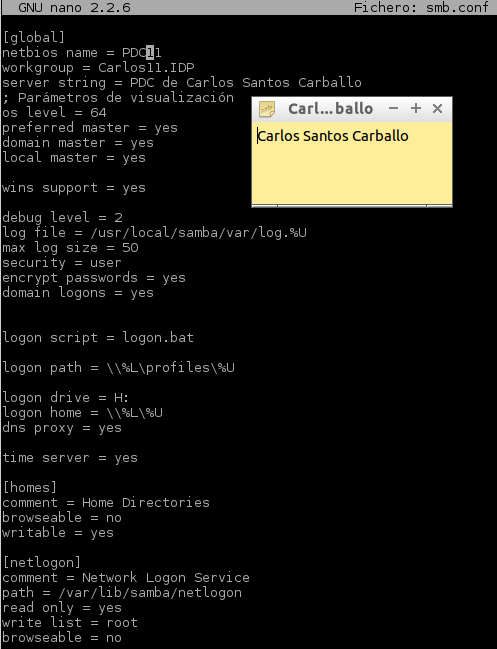
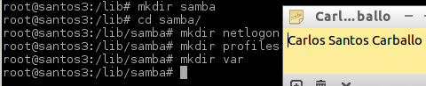
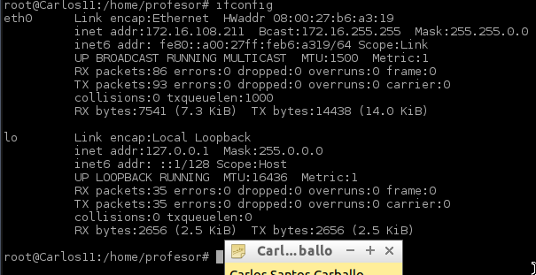
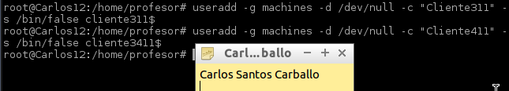
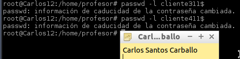
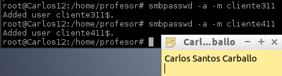
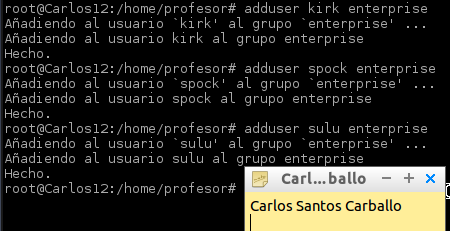
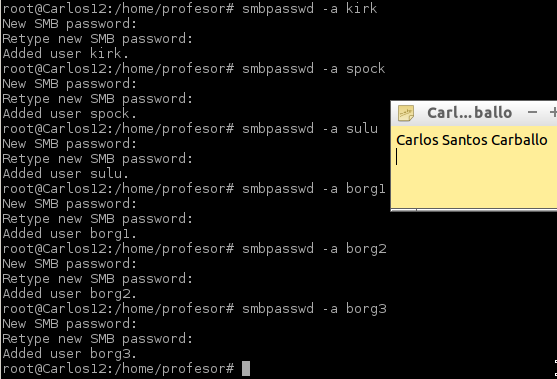
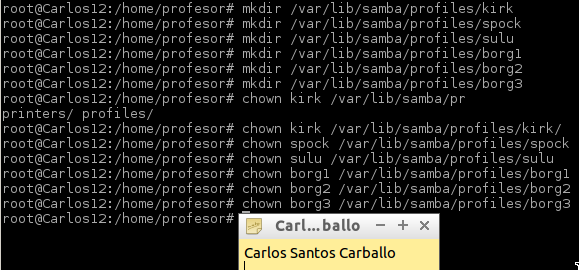
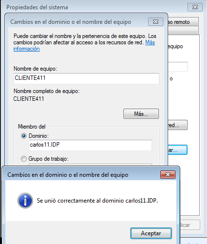

- Módulo: Sistemas Operativos
- Título del trabajo PDC Samba
- Componentes del grupo: Carlos Santos Carballo
- Curso Académico: 2014/2015
- Fecha de entrega: 18 de Marzo de 2015
Utilizaremos la máquina anterior por lo que tenemos ya instalado el samba:
Establecemos el nombre NETBIOS = PDC11
Establecemos el nombre de dominio = carlos11.IDP.
Debemos asegurarnos de que existen todos los directorios nombrados en los recursos compartidos (Esto es, las variables path) de la configuración Samba. Tales como:
/var/lib/samba/netlogon
/var/lib/samba/profiles
/usr/local/samba/var
A continuación configuramos la red.
No debemos modificar el fichero "/etc/resolv.conf" porque no da error, por lo que lo dejamos como está.
Crearemos el grupo "machines" en el servidor. Vamos a crear las cuentas de máquina "client3" y "client4". Deberemos poner dolar al final del nombre de máquina.
Bloqueamos la cuenta Unix para evitar el acceso a una shell
Vamos a crear la cuenta Samba de la máquina. La opcion –m indica que se trata de una cuenta de tipo máquina
Crear el grupo "enterprise", con los usuarios "kirk", "spock", "sulu".Crear el grupo "borg" con los usuarios "borg1", "borg2" y "borg3".
En el servidor, vamos crear las cuentas Samba: Para todos los usuarios anteriores
Además es conveniente crear la carpeta del perfil de cada usuario y poner los permisos correspondientes
Para unir el cliente al dominio debemos seguir el siguiente enlace: http://www.mikroways.net/2009/12/05/problema-con-windows-7-y-dominio-samba/
Comprobamos que nos unimos con exito
